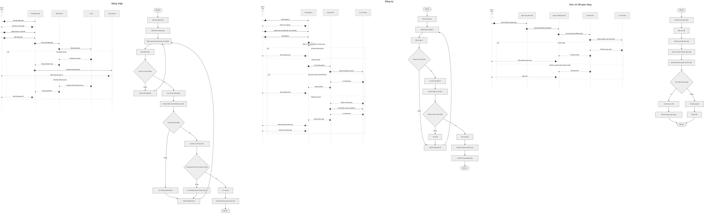

1. Tong quan
Vinh Khanh Smart Tourism giup du khach mua goi truy cap, vao app bang token, kham pha gian hang tren ban do/danh sach, xem mon an, nghe audio mo ta theo ngon ngu va tu dong phat audio khi den gan dia diem.
Mobile App
MAUI app cho du khach: access token, QR, goi dich vu, map, search, audio, ngon ngu, offline cache.
Backend API
ASP.NET Core API xu ly auth, access session, gian hang, mon an, admin/owner, TTS va MySQL.
Dashboard
CS_admin PHP dashboard cho admin va chu quan ly quan ly tai khoan, gian hang, mon an, goi dich vu.
Can cu tu git
| Commit | Noi dung PRD su dung |
|---|---|
2677a5f | Fix app bugs, access pages, image/audio/lang. |
cfaa5d1 | Fix logic QR token va cap nhat activity/sequence access. |
791cbad | Goi dich vu, QR mua goi, bypass thanh toan. |
8577f4e | Admin/backend features, request gian hang, service packages. |
c9908b4 | Dang ky web cho chu quan ly. |
b1987ae | Ngon ngu app, audio, geofence. |
fdd005f | SQLite/offline cache. |
2dca51f | Map. |
2. Pham vi hien tai
Trong MVP
- Kiem tra token khi mo app.
- Dang ky goi dich vu va tao token theo goi.
- Mot QR token dang nhap gui qua email.
- Token chi dung tren mot thiet bi.
- Map/list/search/detail gian hang va mon an.
- Audio guide, geofence 10m, polling 3 giay.
- SQLite cache TTL 12 gio.
- Admin/owner dashboard.
Ngoai MVP
- Webhook thanh toan that.
- QR khoi phuc rieng.
- Token dung chung nhieu may.
- Analytics nang cao.
- Production release store.
3. Chuc nang

Access & Package
Mo app, validate token, dang ky goi, nhan QR token email, quet lai QR token tren dung may.
ImplementedExplore
Xem ban do, danh sach, tim kiem, chi tiet gian hang, chi tiet mon an.
ImplementedLanguage & Audio
Doi ngon ngu app/audio, nghe audio mo ta, auto-play khi vao vung geofence.
ImplementedOffline Cache
Memory cache + SQLite cache, fallback khi API/mang khong san sang.
ImplementedOwner Dashboard
Dang ky, gui yeu cau gian hang, quan ly gian hang/mon an, upload anh.
ImplementedAdmin Dashboard
Quan ly tai khoan, gian hang, mon an, yeu cau, goi dich vu.
Implemented4. Luong QR token

| Quy tac | Mo ta |
|---|---|
| Mot QR | Chi co QR token dang nhap, khong co QR khoi phuc rieng. |
| Mot may | Token duoc khoa vao clientDeviceId khi tao goi. |
| Quet lai | Neu mat token local, quet lai QR trong email tren dung may de vao app. |
| Sai may | May khac hoac may reset lam doi ID se bi tu choi. |
5. Du lieu

| Nhom | Bang |
|---|---|
| Tai khoan | taikhoan, admin, chu_quan_ly, khachhang |
| Gian hang | gianhang, gianhangngonngu, hinhanhgianhang, yeucaugianhang |
| Mon an | monan, monanngonngu, hinhanhmonan |
| Access/goi | goidichvu, thietbi, phien_vao_app, hoadon |
| Hoa don | chitiethoadon, hoadongianhang |
Class Diagram.drawio.png co san trong folder.
Bang yeucaugianhang_backup_20260416 van duoc ghi chu rieng vi no la bang backup migration trong DB hien tai.
6. Bo so do thiet ke trong folder
Cac hinh ben duoi la bo tai lieu draw.io/anh co san trong prd-assets/mermaid,
duoc dung lam nguon minh hoa chinh cho PRD.

7. API chinh
| Nhom | Endpoint | Muc dich |
|---|---|---|
| Access | GET /api/access/validate | Kiem tra token, han dung, dung thiet bi. |
| Access | POST /api/access/token/activate | Quet/kich hoat QR token dang nhap. |
| Access | POST /api/access/package/register | Dang ky goi, tao token, hoa don, email QR. |
| Auth | POST /api/auth/login, POST /api/auth/register | Dang nhap va dang ky tai khoan. |
| App data | GET /api/gianhang/appdata | Du lieu gian hang/mon an cho app theo ngon ngu. |
| Gian hang | GET /api/gianhang, GET /api/gianhang/{id} | Danh sach va chi tiet gian hang. |
| Audio | POST /api/gianhang/{id}/generate-audio | Tao audio TTS tu mo ta. |
| Owner | /api/owner/* | Owner quan ly gian hang, mon an, yeu cau. |
| Admin | /api/admin/* | Admin quan ly he thong. |
8. Phi chuc nang va tieu chi chap nhan
| Hang muc | Yeu cau | Acceptance |
|---|---|---|
| Access | Token dung may, con han. | Token sai may bi tu choi. |
| Offline | SQLite cache TTL 12 gio va fallback cache cu. | Tat API van xem duoc data da sync. |
| Audio | Co cache audio va khong crash khi mat mang. | Audio phat duoc neu cache hoac network san sang. |
| Role | Owner/Admin endpoint kiem tra quyen. | Owner khong sua duoc gian hang khong thuoc minh. |
| Secret | Khong dua SMTP/Google key vao PRD/commit. | Dung example/env/local secret. |
MauiApp1, va don bang backup neu khong can audit.
9. Roadmap
| Giai doan | Noi dung |
|---|---|
| v2.0 | Chot MVP, access token one-device, PRD/diagram, on dinh dashboard. |
| v2.1 | Tich hop payment production, webhook, doi soat hoa don. |
| v2.2 | JWT/session, role claims, rate limit QR/token. |
| v2.3 | Analytics: luot xem, luot nghe audio, goi ban chay. |
| v2.4 | UX polish, ten app, icon, onboarding, offline indicator. |